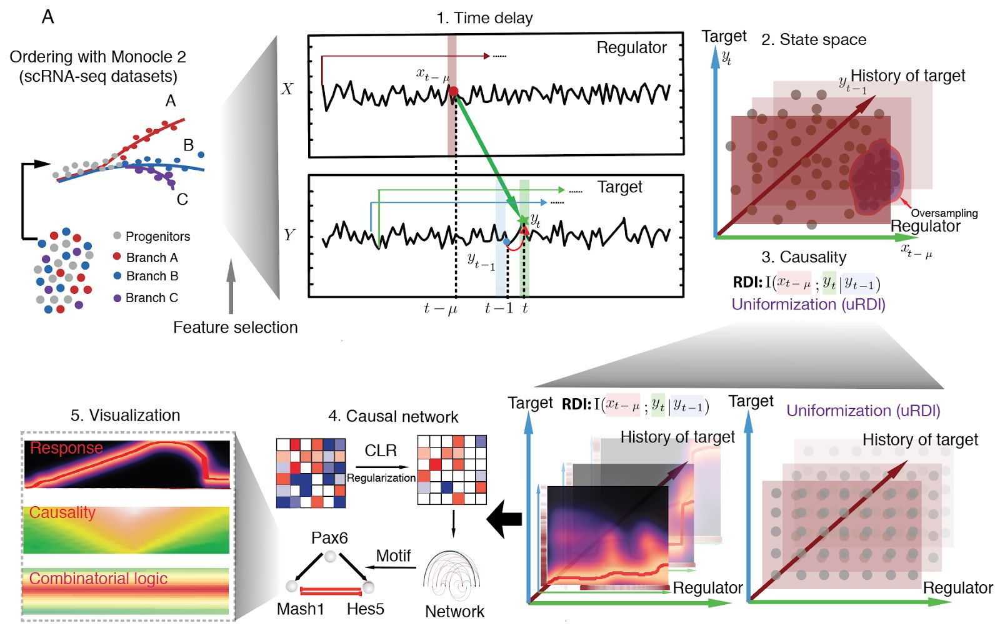

Theory
See how Scribe employs Restricted Direct Information (RDI) to provide a secure solution for resolving complex causal regulatory netowrks.
Integration of RNA velocity and Scribe.
Scribe utilizes the concept of “RNA-velocity” to detect causality from the same cell, alleviating inherent limitations of pseudotime-based inference.

Inferring causal network on live imaging data.
#Explain inferring causal network on live imaging data